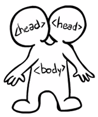

Que se passe-t-il si l'imbrication des éléments n'est pas correcte ?
On a ici 2 imbrications incorrectes : le dernier élément li
est fermé après l'élément ul (ligne 17) et l'élément a
du dernier paragraphe est fermé après l'élément p qui
le contient.
Quand on affiche la page, on s'aperçoit que ce code mal formé ne
provoque pas d'erreur dans le navigateur qui ne s'arrête pas dans
son travail, mais fait le rendu comme il le peut. La mauvaise
imbrication li et ul est tout simplement
ignorée, et la mauvaise imbrication a et p
fait que le lien continue jusqu'à la fin du paragaphe.
Que se passe-t-il si on oublie de fermer un élément ?
On a ici 2 éléments qui ne sont pas fermés.
La première balise <strong> (ligne 9) n'est pas
fermée. Là encore, le navigateur n'arrête pas son travail (ie
n'affiche pas de message d'erreur), mais considère que la balise de
fermeture </strong> se trouve à la fin du code. Le résultat
est donc que tout le texte qui suit cette balise est rendu en gras.
La deuxième balise non fermée est la balise <ul>.
Le navigateur dans ce cas considère que la fin de la liste se trouve
avant le dernier paragraphe (ce qui est exact ici). Encore une fois
aucun message ne signale une erreur quelconque.
Que se passe-t-il si on fait une erreur de syntaxe dans un nom de balise ou dans un nom d'attribut ?
On a ici 3 erreurs de syntaxe.
A la ligne 9 la balise est il à la place de li.
A la ligne 13 la balise est ligne à la place de li.
A la ligne 17 l'attribut est hrf à la place de href.
Comme précédemment, les erreurs ne provoquent pas l'arrêt du travail
du navigateur qui affiche la page comme il le peut. Ici il ignore
purement et simplement les balises et les attributs qu'il ne connait
pas. Bien sûr le résultat affiché n'est pas celui que l'on attend,
mais le navigateur essayera toujours de faire un rendu du code HTML.
Extrait d'un document du W3C qui décrit la façon dont doit être construit l'arbre HTML :
When the insertion mode is "after head", tokens must be handled as follows:
...
A start tag whose tag name is "image"
Parse error. Change the token's tag name to "img" and reprocess it.
(Don't ask.)
...
An end tag whose tag name is "sarcasm"
Take a deep breath, then act as described in the "any other end tag"
entry below.